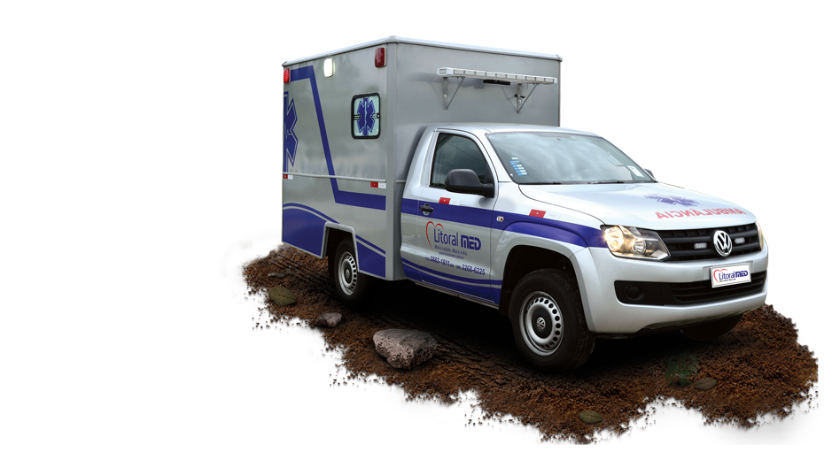
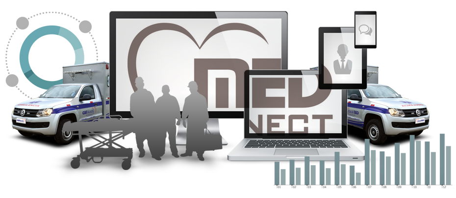

"A LitoralMed é uma empresa da área de saúde, voltada para o atendimento de urgências e emergências, que privilegia o bem estar e o respeito à vida, utilizando-se das últimas novidades tecnológicas e do constante aperfeiçoamento da equipe."


A MedConect divisão de Telemedicina da LitoralMed foi criada com a missão de suprir o mercado com equipamentos e softwares que possibilitem a chegada de serviços de saúde a todos os pontos do Brasil.
A LitoralWork atende PCMSO, PPRA e ASO com profissionais especializados. Realiza em dependências próprias os exames laboratoriais, aud-iometria, acuidade visual, espirometria, raios X, eletrocardiograma eletroencefalograma e avaliação psicológica, facilitando a logística e a rapidez dos resultados.